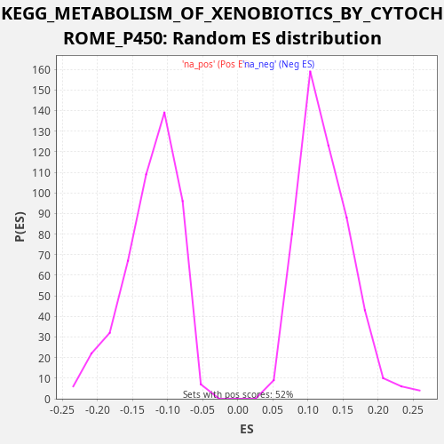

Profile of the Running ES Score & Positions of GeneSet Members on the Rank Ordered List
The same image in compressed SVG format
| Dataset | CCLE |
| Phenotype | NoPhenotypeAvailable |
| Upregulated in class | na_neg |
| GeneSet | KEGG_METABOLISM_OF_XENOBIOTICS_BY_CYTOCHROME_P450 |
| Enrichment Score (ES) | -0.34642446 |
| Normalized Enrichment Score (NES) | -2.8026624 |
| Nominal p-value | 0.0 |
| FDR q-value | 4.2779816E-4 |
| FWER p-Value | 0.002 |
| SYMBOL | RANK IN GENE LIST | RANK METRIC SCORE | RUNNING ES | CORE ENRICHMENT | |
|---|---|---|---|---|---|
| 1 | CYP2C18 | 415 | 0.059 | 0.0043 | No |
| 2 | CYP1A2 | 917 | 0.009 | 0.0051 | No |
| 3 | MGST1 | 1656 | 0.002 | -0.0042 | No |
| 4 | CYP3A7 | 1980 | 0.001 | 0.0040 | No |
| 5 | MGST3 | 2787 | 0.000 | -0.0080 | No |
| 6 | DHDH | 4592 | 0.000 | -0.0620 | No |
| 7 | GSTO1 | 5576 | 0.000 | -0.0815 | No |
| 8 | GSTK1 | 5667 | 0.000 | -0.0635 | No |
| 9 | ALDH3B1 | 5877 | 0.000 | -0.0505 | No |
| 10 | CYP1A1 | 7313 | 0.000 | -0.0890 | No |
| 11 | UGT1A6 | 9412 | 0.000 | -0.1553 | No |
| 12 | MGST2 | 10938 | -0.000 | -0.1975 | No |
| 13 | EPHX1 | 11490 | -0.000 | -0.1989 | No |
| 14 | GSTM4 | 13492 | -0.000 | -0.2611 | No |
| 15 | GSTM3 | 13519 | -0.000 | -0.2404 | No |
| 16 | GSTZ1 | 16047 | -0.000 | -0.3247 | Yes |
| 17 | ADH5 | 16272 | -0.000 | -0.3123 | Yes |
| 18 | GSTT2 | 16292 | -0.000 | -0.2914 | Yes |
| 19 | CYP2E1 | 16308 | -0.000 | -0.2703 | Yes |
| 20 | ADH6 | 16880 | -0.000 | -0.2725 | Yes |
| 21 | GSTM5 | 17301 | -0.000 | -0.2684 | Yes |
| 22 | ALDH1A3 | 18010 | -0.000 | -0.2763 | Yes |
| 23 | CYP3A5 | 18129 | -0.001 | -0.2596 | Yes |
| 24 | GSTP1 | 18679 | -0.001 | -0.2608 | Yes |
| 25 | ADH1C | 19331 | -0.002 | -0.2664 | Yes |
| 26 | CYP2C8 | 19594 | -0.002 | -0.2557 | Yes |
| 27 | GSTA1 | 19880 | -0.003 | -0.2459 | Yes |
| 28 | UGT1A7 | 20095 | -0.003 | -0.2331 | Yes |
| 29 | CYP3A4 | 20613 | -0.005 | -0.2331 | Yes |
| 30 | UGT1A4 | 20895 | -0.007 | -0.2231 | Yes |
| 31 | CYP2S1 | 20902 | -0.007 | -0.2016 | Yes |
| 32 | ALDH3B2 | 21270 | -0.011 | -0.1953 | Yes |
| 33 | CYP2B6 | 22369 | -0.063 | -0.2196 | Yes |
| 34 | GSTA4 | 22670 | -0.128 | -0.2104 | Yes |
| 35 | AKR1C4 | 22736 | -0.150 | -0.1914 | Yes |
| 36 | UGT2B7 | 22789 | -0.172 | -0.1719 | Yes |
| 37 | GSTO2 | 23014 | -0.329 | -0.1595 | Yes |
| 38 | AKR1C3 | 23308 | -0.892 | -0.1501 | Yes |
| 39 | AKR1C1 | 23448 | -1.540 | -0.1342 | Yes |
| 40 | UGT1A1 | 23497 | -1.883 | -0.1145 | Yes |
| 41 | GSTM2 | 23515 | -2.108 | -0.0934 | Yes |
| 42 | CYP1B1 | 23534 | -2.361 | -0.0724 | Yes |
| 43 | UGT1A10 | 23790 | -9.206 | -0.0614 | Yes |
| 44 | AKR1C2 | 23797 | -9.518 | -0.0399 | Yes |
| 45 | GSTM1 | 23814 | -10.573 | -0.0188 | Yes |
| 46 | ALDH3A1 | 23820 | -11.114 | 0.0027 | Yes |

{kind=link}
{kind=link}